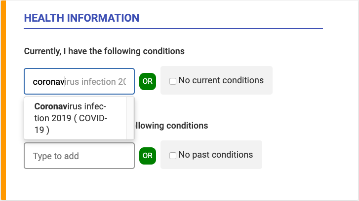

Health research is critical to ending the COVID-19 pandemic. Our researchers are hard at work to find vaccines and other ways to potentially prevent and treat COVID-19 and need your help.
How you can help with the COVID-19 pandemic
Sign up to participate in future COVID-19 Research Studies
Researchers are working on urgent studies to understand and combat COVID-19. To play a part in these discoveries, create a profile on UMHealthResearch.org.
If you currently have this virus, or have been diagnosed and recovered, please select Coronavirus infection 2019 ( COVID-19 ) as a medical condition. If you have never been diagnosed, we still need you. Please sign up and you will be notified of new study opportunities.

If you are already a UMHealthResearch user, please remember to update your profile with these conditions.
Vaccine Research
What do Michigan Medicine doctors have to say about vaccines? Watch the video to get answers to some of the most frequent questions asked on this subject.
Vaccines are the most heavily tested and monitored type of medical product we have (more than antibiotics, cancer drugs, or other types of medical treatment). A vaccine to prevent the coronavirus (COVID-19) is perhaps our best hope for ending the pandemic. While there’s no vaccine to prevent COVID-19, researchers around the world are racing to create one.
Coronavirus Vaccine Research
COVID-19 is a coronavirus, which is a family of viruses that cause illnesses such as the common cold, severe acute respiratory syndrome (SARS) and Middle East respiratory syndrome (MERS).
While vaccines may take years to develop, researchers have a head start as they work across the globe on developing a COVID-19 vaccine, due to past research on SARS and MERS. As a result, some researchers are optimistic that a COVID-19 vaccine could be developed on a shorter timeline.
Learn more about Michigan Medicine vaccine trials here.
Did you know there is more than one way to develop a vaccine?
In coordination with the U.S. Food and Drug Administration (FDA), the Red Cross is seeking people who are fully recovered from COVID-19 to sign up to donate plasma to help current COVID-19 patients. There is some evidence to suggest that convalescent plasma from people who have recovered from the virus could help patients with serious or immediately life-threatening COVID-19 infections, or those deemed at high risk. If you're fully recovered from a COVID-19 infection and meet the above criteria, please contact the Red Cross to schedule an appointment.